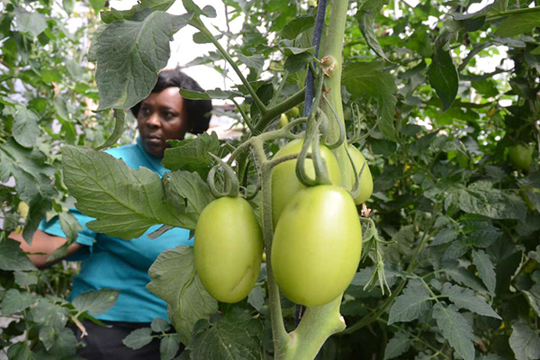
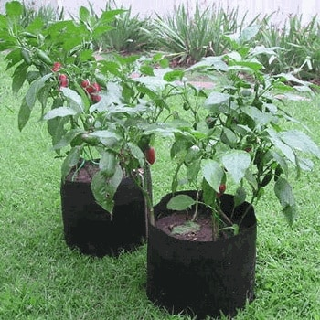

Mkulima Bora


How to go about your small garden at home.
If you want to improve your soil and make it more suitable for your vegetable garden,
you first have to figure out what you’re dealing with. Is your soil sandy or clay-based?
Is it too acidic or too alkaline? The way to answer these questions is to have your soil tested.
There are do-it-yourself tests you can purchase or you can hire a private soil testing laboratory or your local cooperative extension office to test it.
Not only will the professional soil tester tell you the composition of your soil, but the lab will usually be able to make recommendations on how to improve it.
In addition to measuring the pH level of your soil — how acidic or alkaline it is — tests also look at how much calcium,
organic matter, magnesium, nitrogen, phosphorus, potassium, sodium, sulfur and trace minerals it contains.
Once you’ve corrected the pH of your soil, you’ll also probably want to add organic matter. According to the University of Georgia Cooperative Extension,
“an ideal soil would have equal parts of sand (0.02 to 2.0 millimeters), silt (0.002 to 0.02 millimeters) and clay (0 to 0.002 millimeters) and contain about 5 percent organic matter.”
Also aerate your soil. Dig down 10 to 12 inches and turn the soil over.
You can do this with a spade or a garden fork. The University of Nairobi recommends digging a trench 1-foot-deep on one side of your garden.
Push the soil from that trench to the outer boundary. Then dig another ditch right next to it and fill in the first ditch with the dirt from the second ditch.
Proceed across the garden. You can also use a tractor-mounted plow or a Rototiller set to the deepest depth. While you’re turning over the soil,
add organic matter so it gets down to the root level of the plants, so your vegetables can have access to the nutrients that you are adding.
How much organic matter you will have to add depends on your soil’s composition, the size of your garden and your climate.
For example, sandy soils in warmer climates may need as much as 2,300 to 4,600 pounds per 1,000 square feet according to the University of Georgia.
Heavier soils in cooler climates with less rainfall may need as little as 200 pounds per 1,000 square feet.
You’ll want to fertilize your garden plot twice if you can: once before planting and then again in the middle of your growing season.
For mid-season fertilizing, it’s easiest to do what’s known as “side dressing” which means adding dry fertilizers, compost or other organic soil amendments to the side of your plants. To side dress, you dig a narrow furrow one to three
inches deep at the plant’s drip line or six inches from the plant base, whichever is greater. You then sprinkle the amendment into the furrow and cover it up with soil.
Pest Control
We understand that pests can have devastating consequences for your business.As farmers space, we
offer readily available pest control specialists who are just a call away from the desired client. They not
only offer physical services but also give reliable content to you our client on the various ways to prevent
pests and other ways of boosting you yield
Need Help!
Click on the link below to contact us
Pest Management!!!